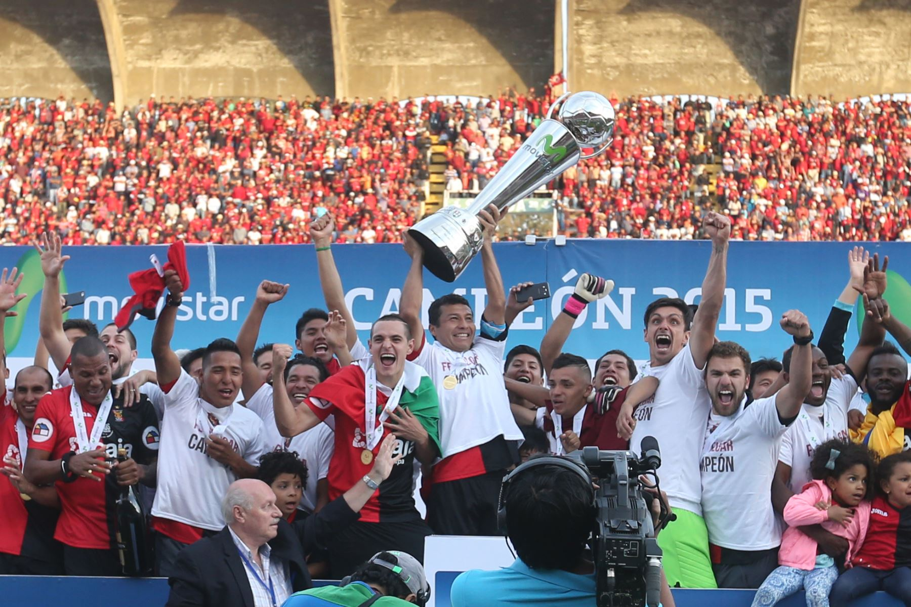

Historia
La ciudad fue fundada el 15 de agosto de 1540, bajo la denominación de "Villa Hermosa de Nuestra Señora de la Asunta" en nombre del marqués don Francisco Pizarro y el 22 de setiembre de 1541 el monarca Carlos V en Cédula Real ordena que se le llamé "Ciudad de Arequipa". En el periodo virreinal adquirió desde ya importancia, misma que fue reconocida por la Corona Española a través de los títulos que se le conceden tales como "Muy Noble y Muy Leal" y el de "Fidelísima".
En la historia republicana del Perú el protagonismo de la ciudad de Arequipa fue gravitante, pues llegó a ser declarada "Capital de la República" durante el gobierno de Lizardo Montero. Su casco histórico se extiende sobre un superficie de 332 hectareas y fue declarado por la Unesco como "Patrimonio Cultural de la Humanidad", por sus diversos espacios escénicos y culturales es una Ciudad Receptora de Turismo Nacional e Internacional.
Plaza de Armas de Arequipa 1890
¿Porque se le dicen la Ciudad Blanca?
Arequipa es conocida como la Ciudad Blanca debido a su arquitectura construida con piedra volcánica blanca, llamada sillar, que es resistente a la intemperie y antisísmica. Su utilización se inicia a finales del siglo XVI. Esta piedra volcánica (provocada por el asentamiento de la ceniza) es blanca o excepcionalmente rosada. Su textura es blanda, ligera y resistente a la intemperie, por lo que surgió como solución estructural antisísmica privilegiada y una gran alternativa al adobe. Se extrae de canteras ubicadas en quebradas naturales ubicadas en la provincia de Arequipa.
Así, por ese motivo, podemos ver en las calles de Arequipa grandes construcciones de sillar, como arcos, piletas, templos, conventos, museos, bancos, sedes institucionales, así como hoteles y restaurantes que le da un sello particular.
Region
Cabe indicar que la region Arequipa está conformado por 8 provincias, que se muestran en el siguiente cuadro con sus respectivas capitales.
| Provincia | Capital | Distritos |
| Arequipa | Arequipa | 29 |
| Camaná | Camaná | 8 |
| Caravelí | Caravelí | 13 |
| Castilla | Aplao | 14 |
| Caylloma | Chivay | 20 |
| Condesuyos | Chuquibamba | 8 |
| Islay | Mollendo | 6 |
| La Unión | Cotahuasi | 11 |
Deporte
Futból
El FBC Melgar es el equipo más representativo de la ciudad de Arequipa. Conocido como el equipo 'Dominó', fue fundado el 25 de Marzo de 1915 y es el único equipo provinciano que se ha mantenido en Primera División desde que ganó la Copa Perú en 1971.
En 1981, consolidó su mejor año en la Profesional, Definió el título nacional con Sporting Cristal que durante ese año cumplió una mala campaña, Los rojinegros sólo necesitaban de un empate para lograr la corona. El partido finalizó en empate 1 a 1, con esto el título fue Arequipeño, convirtiéndose asi en el primer equipo del interior en ganar el campeonato.

Despues del 34 años El club Melgar FBC se coronó campeón de la primera división del fútbol peruano, al vencer el 16 de diciembre del 2015 venciendo 3-2 al Sporting Cristal en un vibrante partido de vuelta, y en medio de las celebraciones por el centenario del club.
Los goles de Melgar fueron anotados por Ysrael Zuñiga, Omar Fernández y Bernardo Cuesta. El tercer tanto de los arequipeños llegó a los 90’, cuando el partido iba 2-2 y los penales estaban cerca.
Mapa del circuito turístico del valle del Colca
El Valle del Colca se localiza en el extremo nororiental de la Región Arequipa, provincia de Caylloma, a 165 kilómetros de la ciudad de Arequipa y 40 km de Chivay pueblo principal y capital de la provincia de Caylloma. El punto más elevado del Valle del Colca es el nevado Ampato (6288 msnm), y el más bajo la confluencia de los ríos Colca y Andamayo (970 msnm). El valle del Colca tiene una extensión de 100 km de largo y ocupa sólo un sector de la cuenca del río Colca, comprendido entre los distritos de Callalli y Huambo.
Gerencia regional
Desde el 1 de enero de 2019 el órgano administrativo está conformado por:
- Gerencia General Regional: Edmer Trujillo Mori
- Gerencia Regional de Agricultura: Mirko Avendaño Quevedo
- Gerencia Regional de Comercio Exterior y Turismo: Lic. Miguel Apaza Peña
- Gerencia Regional de Educación: Jorge Luis Choque Mamani
- Gerencia Regional de Energía y Minas: Gladys Azucena Márquez Chaname
- Gerencia Regional de Salud: Edwin Bengoa Feria
- Gerencia Regional de Producción: Jorge Rivera Quiroz
- Gerencia Regional de Trabajo y Promoción del Empleo: Milagros Copa Medina